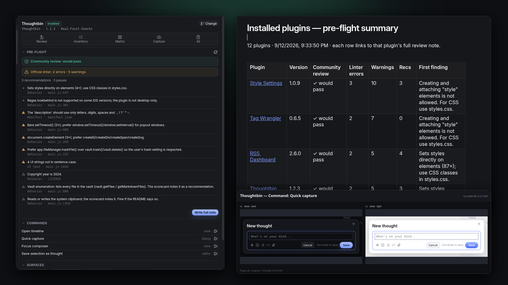
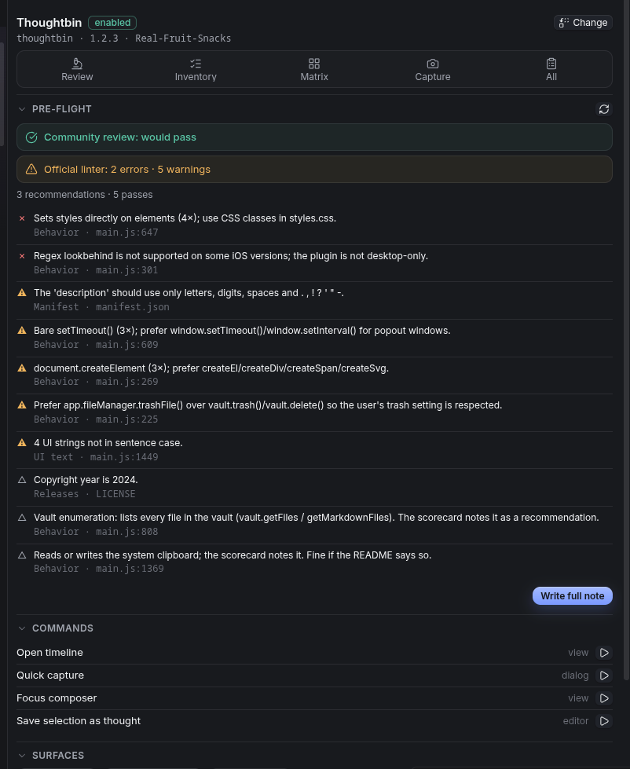
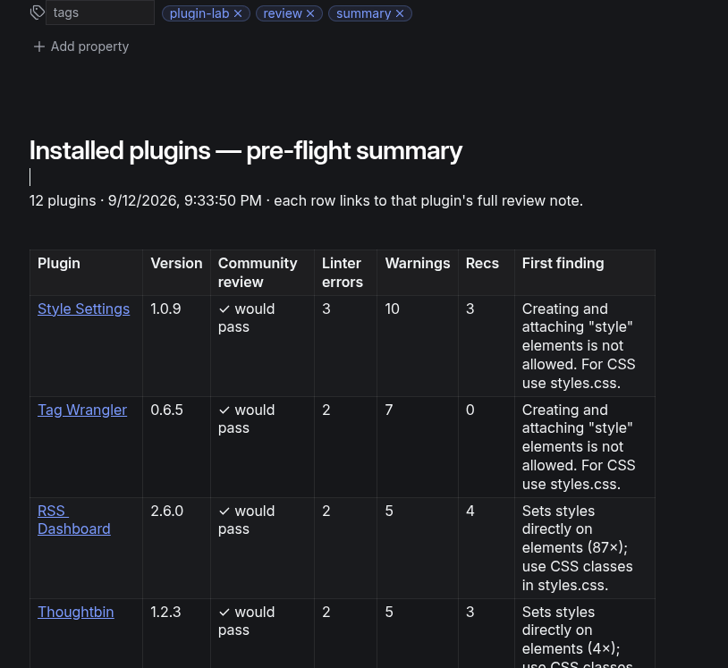
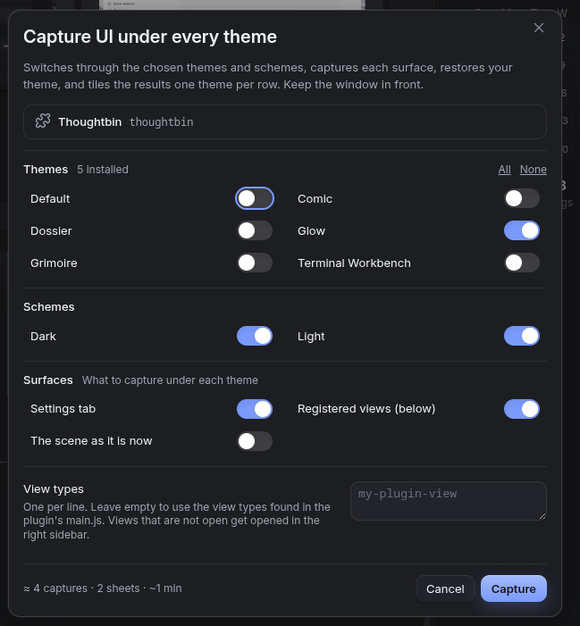
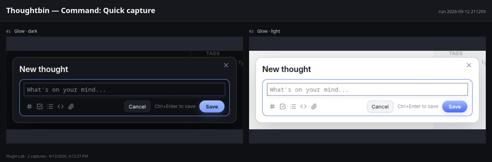

Plugin Lab reads an installed plugin and tells you what the community review will say and what the official linter would flag — rule id, file, line. Then it inventories the plugin and captures its UI under every theme you have.

The things a plugin author does by hand before a release — or finds out about after.
Two verdicts, kept apart: would the community review pass it, and what would the official linter say. 35 of the linter's 40 rules mirrored, with its own severities and its brand and acronym lists.
Each finding names the rule, links its doc, and points at the file and line. No guessing what a reviewer meant.
Commands with hotkeys and what they do, settings with types and descriptions, ribbons, views, processors, URI handlers, dialogs, stored keys — and a README snippet.
Settings tab, views, ribbon icons and commands captured under every installed theme × dark and light, tiled one theme per row. Modals, menus, popovers and notices are framed tightly.
Reads each command from the code: opens a dialog, opens a view, needs an editor, writes files, uses the network. Safe ones are pre-ticked for capture; the rest are labelled.
Review every installed plugin into one summary, worst first, each row linking to its full note. Useful for your dependencies too.
A plugin can be listed and still fail the linter. Plugin Lab never conflates the two.
The gate for the directory. Only rules verified to block a listing count here: the manifest words the review rejects, a malformed version, obfuscation, analytics SDKs. Calibrated against a dozen listed plugins until it matched their real scorecards.
eslint-plugin-obsidianmd, the guideline linter reviewers point people to. Errors are its enabled rules, warnings its warn-level rules. Not enforced by the directory — but it's what "please follow the guidelines" means.




Open the panel, pick the plugin you're working on, keep it open.
Open panelReview a pluginpre-flight for the community reviewReview every installed pluginsummary note + one note eachWrite a plugin inventorycommands, settings, surfacesCapture a plugin's UI under every themeCapture one screenshot nowFrom the community list, or three files by hand.
main.js, styles.css and manifest.json from the latest release into .obsidian/plugins/plugin-lab/, then enable it.capturePage. No network requests; everything stays in your vault..obsidian/
plugins/
plugin-lab/
main.js
styles.css
manifest.json
Plugin Lab/ in your vault
Thoughtbin/
Review 2026-09-12 …md
Inventory 2026-09-12 …md
2026-09-12 211209/
Matrix.md
sheets/
Summary 2026-09-12 …mdBare version numbers as tags; releases are built by the workflow.
Tools for people who make things for Obsidian, and the themes made with them.